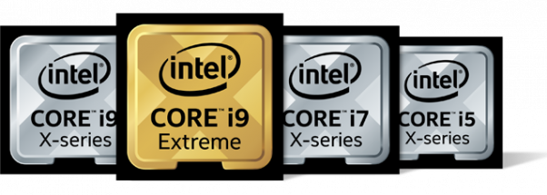

A Processzorokról
Mi a szerepe és mire szolgál a processzor?
Ez a központi egység a számítógép egyik legfontosabb és a legdrágább alkatrésze is egyben. Minosége, gyorsasága, teljesítménye nagyban meghatározza a komputer muködését.
Manapság a processzorok több milliárd tranzisztort és elektronikus logikai elemet tartalmaznak. Mindegyik részegységet – legyen az videokártya, rendszersín stb. – saját processzor vagy processzorok vezérlik. Ezek közül a legfontosabb a központi feldolgozó egység. A CPU-architektúra alapján épül fel az alaplap-architektúra és kerül megtervezésre maga a számítógép-architektúra és -konstrukció.
Minden processzor egy adott számú
- tárolóegységet (regisztert),
- aritmetikai-logikai egységet (ALU)
- és vezérloegységet (CU)
tartalmaz. A regiszterek a programállapot, a memóriacímek, az adatcímek ideiglenes tárolását végzik a központi feldolgozó egységben. A regiszterek többnyire néhány bájt kapacitású tárolók. Ennek megfeleloen a regiszterek többfélék lehetnek: programszámláló regiszter, utasítás regiszter, memóriacím regiszter, memóriaadat regiszter és állapotregiszter. A processzorban az ALU hajtja végre a matematikai számításokat és a logikai muveleteket.
A vezérloegység lehívja, értelmezi és végrehajtja a regiszter által tárolt utasításokat, vezérli a számítógép többi egységének muködését.
A központi vezérlo egységek saját belso memóriával – cache memóriával – is rendelkeznek. A cache memória vagy gyorsítótár gyorsabb az operatív memóriánál, de lassabb a már fent említett regisztereknél. Célja, hogy a különbözo fajtájú memóriák (pl. a gyorsabb operatív tár és a lassúbb merevlemez) közötti sebességkülönbséget kiküszöbölje, így gyorsítva az alkalmazások futtatását.
CPU órajel és teljesítmény
A processzor legfontosabb jellemzoje az órajel (clock signal). Mértékegysége a korszeru processzorok esetén a GHz (gigahertz). A processzor teljesítményét elsosorban az órajel határozza meg. A 2 GHz-es órajel azt jelenti, hogy a processzor 1 másodperc alatt 2 milliárd muveletet elvégzésére képes. Minél nagyobb az órajel, annál nagyobb a processzor teljesítménye. Ez az állítás teljességgel igaz volt a többmagos processzorok megjelenéséig.
Korábban minden CPU egy maggal rendelkezett. Teljesítményüket hosszú évekig sikerült az órajel emelésével növelni. A fejlesztok egy ido után abba a problémába ütköztek, hogy a frekvencia tovább már nem növelheto. Pontosabban az órajel növelheto, de a processzor hutése egyre nehezebbnek bizonyult. Ennek az a magyarázata, hogy a frekvencia növeléséhez egyre több feszültséget kellett felvennie a CPU-nak, ami egyre nagyobb hotermeléssel járt. A mérnökök sokáig törték a fejüket, hogy hogyan tovább? Végül arra jutottak, hogy nem a processzor vastagságát fogják növelni, hanem a területét. A vezérlo egységekbe így került egy mag helyett ketto. A két mag lehetové tette, hogy két feladatot futtassanak egyszerre.
A két legismertebb laptop processzorgyártó
Mára a hordozható számítógépek többségét az Intel és az AMD által gyártott processzorokkal szerelik fel. Érdemes tudni, hogy az Intel processzorok energiahatékonysága általában jobb az AMD processzorok effektivitásánál, ezért az ezekkel felszerelt laptopok csendesebben, nagyobb sebességgel és hosszabb élettartam mellett üzemelnek. A hozzáférheto áron beszerezheto Intel Celeron és Intel Pentium processzorok tudása nagyjából megfelel az AMD márka E1 és E2 szériájú központi feldolgozó egységének. Notebook vásárlása elott érdemes a processzor és más eroforrások minosége alapján mérlegelni és választani a szaküzletekben vagy webáruházakban elérheto kínálatból. Errol részletesebben itt: Laptop választás méret és teljesítmény alapján.